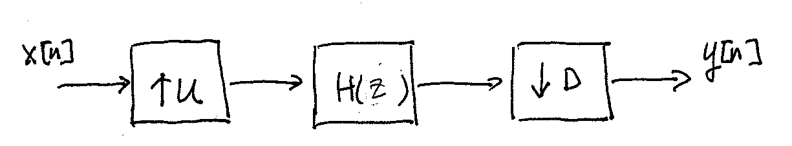

3.3. Multi-rate Filtering#
As mentioned before, we may often need to implement multi-rate filters. A typical multi-rate filter is as shown below:
The input signal \(x[n]\) is first up-sampled by a factor of \(U\).
The up-sampled signal is then passed through a filter with transfer function \(H(z)\), running at \(U\) times the input rate.
Finally the filter output is down-sampled by a factor of \(D\) to obtain \(y[n]\). The overall rate of \(y[n]\) is \(\frac{U}{D}\) times that of \(x[n]\).
Note that the filter \(H(z)\) (also let \(h[n]\) denote its impulse response for later reference) should provide interpolation and anti-aliasing filtering operations respectively for the up-sampling and down-sampling steps above. Ideally, \(H(z)\) should be lowpass with the (normalized) cutoff frequency set at \(\min\left( \frac{1}{2U}, \frac{1}{2D} \right)\).
Practically we approximate the ideal lowpass cutoff by a relatively long FIR filter for \(H(z)\). This has significant complexity impacts on our multi-rate filter implementation. Not only does the filter have to operate at \(U\) times the input rate, but it also needs to have a long impulse response. This makes the frequency-domain filtering implementation with overlap-save discussed previously more important.
It is also easy to work out the computational complexity of directly implementing the multi-rate filter above by doing time-domain convolution and by using the overlap-save algorithm in the frequency domain. Let the length of \(h[n]\) be \(L\) and the length of \(x[n]\) be \(N\). In most cases of interest, we have \(NU \gg L \gg UD\). We will apply this assumption when calculating any complexity order below. Since the exact length of \(y[n]\) is \(\left\lfloor\frac{NU+L-1}{D} \right\rfloor\), we may simply say \(y[n]\) has a length of \(\mathcal{O}\left(\frac{NU}{D}\right)\).
For time-domain convolution, \(L\) (complex) multiplications are required to calculate each output sample. So the total number of multiplications needed to compute the whole \(y[n]\) is \(\mathcal{O}\left(\frac{LNU}{D}\right)\). As a result, to calculate the whole \(y[n]\), the number of multiplications needed per input sample is \(\mathcal{O}\left(\frac{UL}{D}\right)\).
For the overlap-save algorithm, choose \(L \ll 2^m\), where \(2^m\) is the FFT size. Each block of \(M=2^m-L+1\) input samples to \(H(z)\) corresponds to a block of \(\mathcal{O}\left(\frac{M}{U} \right)\) samples of \(x[n]\). We need \(\mathcal{O}\left(m 2^m \right)\) multiplications to calculate the output of filter \(H(z)\) for each input block. Hence the number of multiplications needed per input sample to calculate the whole \(y[n]\) is \(\mathcal{O}\left(mU\right)\).
In conclusion, as long as we can choose \(m\) such that \(mD \ll L \ll 2^m\), we can get significant advantage in computational complexity by using the overlap-save algorithm in lieu of time-domain convolution.
The class
FilterOverlapAddinfilters.cppprovides an example direct multi-rate implementation of the overlap-save algorithm. To use the multi-rate implementation:Instantiate a
FilterOverlapSaveobject using the multi-rate constructor:// Construct single-rate OverlapSave filter object FilterOverlapSave multirate_filter(U, D, in_len, L, h, nthreads);
where
U=up-sampling factor,D=down-sampling factor,in_len=length of input sample sequence,h=pointer to impulse response array, andnthreads=number of threads to use in FFT calculations. Note that the filterhoperates at the up-sampled rate and its lengthLcorresponds to that rate.Set the first \(L-1\) samples to the filter input to \(0\):
multirate_filter.set_head(true); // reset=true
if filter the first sequence of samples in a continuous flow of samples. Otherwise, copy the tail \(L-1\) samples from the previous filter input to the head \(L-1\) of current filter input to set up the correct boundary condition for continuous filtering:
multirate_filter.set_head(); // reset=false by default
Do filtering
multirate_filter.filter(in, out);
where
in=pointer to filter input array of lengthin_len, andout=pointer to filter output array. The length ofoutcan be obtained by callingmultirate_filter.out_len().
For a usage example of the
FilterOverlapSaveclass seetest_filters.cpp.
{kind=link}